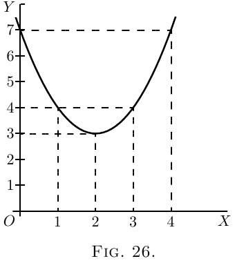
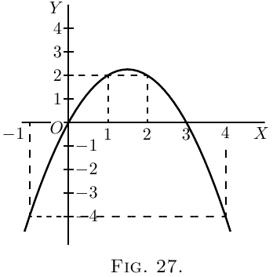
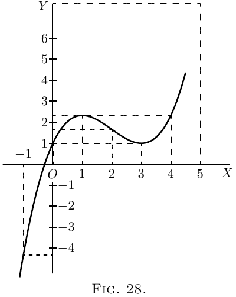
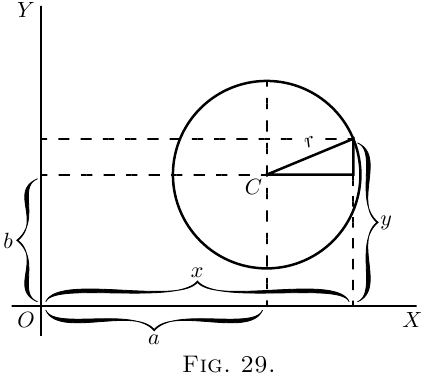
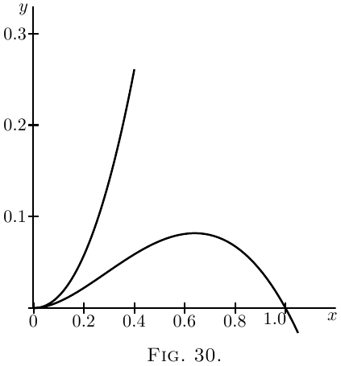

One of the principal uses of the process of differentiating is to find out under what conditions the value of the thing differentiated becomes a maximum, or a minimum. This is often exceedingly important in engineering questions, where it is most desirable to know what conditions will make the cost of working a minimum, or will make the efficiency a maximum.
Now, to begin with a concrete case, let us take the
equation
\[
y = x^2 - 4x + 7.
\]

By assigning a number of successive values to $x$,
and finding the corresponding values of $y$, we can
readily see that the equation represents a curve with
a minimum.
| $x$ | $ 0$ | $ 1 $ | $2 $ | $3 $ | $4$ | $ 5$ |
| $y$ | $ 7$ | $ 4 $ | $3 $ | $4 $ | $7$ | $ 12$ |
These values are plotted in Figure 26, which shows that $y$ has apparently a minimum value of $3$, when $x$ is made equal to $2$. But are you sure that the minimum occurs at $2$, and not at $2 \tfrac{1}{4}$ or at $1 \tfrac{3}{4}$?
Of course it would be possible with any algebraic
expression to work out a lot of values, and in this
way arrive gradually at the particular value that
may be a maximum or a minimum.

Here is another example:
Let $y = 3x - x^2$.
Calculate a few values thus:
| $x$ | $-1$ | $0$ | $1$ | $2$ | $3$ | $4$ | $5$ |
| $y$ | $-4$ | $0$ | $2$ | $2$ | $0$ | $-4$ | $-10$ |
Plot these values as in Figure 27.
It will be evident that there will be a maximum somewhere between $x = 1$ and $x = 2$; and the thing looks as if the maximum value of $y$ ought to be about $2 \tfrac{1}{4}$. Try some intermediate values. If $x = 1 \tfrac{1}{4}$, $y = 2.187$; if $x = 1 \tfrac{1}{2}$, $y = 2.25$; if $x = 1.6$, $y = 2.24$. How can we be sure that $2.25$ is the real maximum, or that it occurs exactly when $x = 1 \tfrac{1}{2}$?
Now it may sound like juggling to be assured that there is a way by which one can arrive straight at a maximum (or minimum) value without making a lot of preliminary trials or guesses. And that way depends on differentiating. Look back to an earlier page (here) for the remarks about Fig. 14 and Fig. 15, and you will see that whenever a curve gets either to its maximum or to its minimum height, at that point its $\dfrac{dy}{dx} = 0$. Now this gives us the clue to the dodge that is wanted. When there is put before you an equation, and you want to find that value of $x$ that will make its $y$ a minimum (or a maximum), first differentiate it, and having done so, write its $\dfrac{dy}{dx}$ as equal to zero, and then solve for $x$. Put this particular value of $x$ into the original equation, and you will then get the required value of $y$. This process is commonly called “equating to zero.”
To see how simply it works, take the example with which this chapter opens, namely \[ y = x^2 - 4x + 7. \] Differentiating, we get: \[ \dfrac{dy}{dx} = 2x - 4. \] Now equate this to zero, thus: \[ 2x - 4 = 0. \] Solving this equation for $x$, we get: \begin{align*} 2x &= 4, \\ x &= 2. \end{align*}
Now, we know that the maximum (or minimum) will occur exactly when $x=2$.
Putting the value $x=2$ into the original equation, we get \begin{align*} y &= 2^2 - (4×2) + 7 \\ &= 4 - 8 + 7 \\ &= 3. \end{align*}
Now look back at Figure 26, and you will see that the minimum occurs when $x = 2$, and that this minimum of $y = 3$.
Try the second example (Figure 24), which is \begin{align*} y &= 3x - x^2. \\ \text{Differentiating,}\; \frac{dy}{dx} &= 3 - 2x. \\ \end{align*} Equating to zero, \begin{align*} 3 - 2x &= 0, \\ \text{whence}\; x &= 1 \tfrac{1}{2}; \\ \end{align*} and putting this value of $x$ into the original equation, we find: \begin{align*} y &= 4 \tfrac{1}{2} - (1 \tfrac{1}{2} × 1 \tfrac{1}{2}), \\ y &= 2 \tfrac{1}{4}. \end{align*} This gives us exactly the information as to which the method of trying a lot of values left us uncertain.
Now, before we go on to any further cases, we have two remarks to make. When you are told to equate $\dfrac{dy}{dx}$ to zero, you feel at first (that is if you have any wits of your own) a kind of resentment, because you know that $\dfrac{dy}{dx}$ has all sorts of different values at different parts of the curve, according to whether it is sloping up or down. So, when you are suddenly told to write \[ \frac{dy}{dx} = 0, \] you resent it, and feel inclined to say that it can't be true. Now you will have to understand the essential difference between “an equation,” and “an equation of condition.” Ordinarily you are dealing with equations that are true in themselves, but, on occasions, of which the present are examples, you have to write down equations that are not necessarily true, but are only true if certain conditions are to be fulfilled; and you write them down in order, by solving them, to find the conditions which make them true. Now we want to find the particular value that $x$ has when the curve is neither sloping up nor sloping down, that is, at the particular place where $\dfrac{dy}{dx} = 0$. So, writing $\dfrac{dy}{dx} = 0$ does not mean that it always is $=0$; but you write it down as a condition in order to see how much $x$ will come out if $\dfrac{dy}{dx}$ is to be zero.
The second remark is one which (if you have any wits of your own) you will probably have already made: namely, that this much-belauded process of equating to zero entirely fails to tell you whether the $x$ that you thereby find is going to give you a maximum value of $y$ or a minimum value of $y$. Quite so. It does not of itself discriminate; it finds for you the right value of $x$ but leaves you to find out for yourselves whether the corresponding $y$ is a maximum or a minimum. Of course, if you have plotted the curve, you know already which it will be.
For instance, take the equation: \[ y = 4x + \frac{1}{x}. \]
Without stopping to think what curve it corresponds to, differentiate it, and equate to zero: \begin{align*} \frac{dy}{dx} &= 4 - x^{-2} = 4 - \frac{1}{x^2} = 0; \\ \text{ whence}\; x &= \tfrac{1}{2}; \\ \end{align*} and, inserting this value, \begin{align*} y &= 4 \end{align*} will be either a maximum or else a minimum. But which? You will hereafter be told a way, depending upon a second differentiation, (see Chap. XII.). But at present it is enough if you will simply try any other value of $x$ differing a little from the one found, and see whether with this altered value the corresponding value of $y$ is less or greater than that already found.
Try another simple problem in maxima and minima. Suppose you were asked to divide any number into two parts, such that the product was a maximum? How would you set about it if you did not know the trick of equating to zero? I suppose you could worry it out by the rule of try, try, try again. Let $60$ be the number. You can try cutting it into two parts, and multiplying them together. Thus, $50$ times $10$ is $500$; $52$ times $8$ is $416$; $40$ times $20$ is $800$; $45$ times $15$ is $675$; $30$ times $30$ is $900$. This looks like a maximum: try varying it. $31$ times $29$ is $899$, which is not so good; and $32$ times $28$ is $896$, which is worse. So it seems that the biggest product will be got by dividing into two equal halves.
Now see what the calculus tells you. Let the number to be cut into two parts be called $n$. Then if $x$ is one part, the other will be $n-x$, and the product will be $x(n-x)$ or $nx-x^2$. So we write $y=nx-x^2$. Now differentiate and equate to zero; \begin{align*} \dfrac{dy}{dx} = n - 2x = 0\\ \text{Solving for $x$, we get}\; \dfrac{n}{2} = x.\\ \end{align*} So now we know that whatever number $n$ may be, we must divide it into two equal parts if the product of the parts is to be a maximum; and the value of that maximum product will always be $ = \tfrac{1}{4} n^2$.
This is a very useful rule, and applies to any number of factors, so that if $m+n+p=$ a constant number, $m×n×p$ is a maximum when $m=n=p$.
Test Case.
Let us at once apply our knowledge to a case that we can test. \begin{align*} \text{Let } y &= x^2 - x; \end{align*} and let us find whether this function has a maximum or minimum; and if so, test whether it is a maximum or a minimum.
Differentiating, we get \begin{align*} \frac{dy}{dx} &= 2x - 1. \\ \text{ Equating to zero, we get }\; 2x - 1 &= 0, \\ \text{whence }\; 2x &= 1, \\ \text{or } \; x &= \tfrac{1}{2}. \end{align*}
That is to say, when $x$ is made $=\frac{1}{2}$, the corresponding value of $y$ will be either a maximum or a minimum. Accordingly, putting $x=\frac{1}{2}$ in the original equation, we get \begin{align*} y &= (\tfrac{1}{2})^2 - \tfrac{1}{2}, \\ or \; y &= -\tfrac{1}{4}. \end{align*}
Is this a maximum or a minimum? To test it, try putting $x$ a little bigger than $\frac{1}{2}$,–say make $x=0.6$. Then \[ y = (0.6)^2 - 0.6 = 0.36 - 0.6 = -0.24, \] which is higher up than $-0.25$; showing that $y = -0.25$ is a minimum.
Plot the curve for yourself, and verify the calculation.
Further Examples.
A most interesting example is afforded by a curve
that has both a maximum and a minimum. Its
equation is:
\begin{align*}
y &=\tfrac{1}{3} x^3 - 2x^2 + 3x + 1. \\
Now \; \dfrac{dy}{dx} &= x^2 - 4x +3.
\end{align*}

Equating to zero, we get the quadratic,
\[
x^2 - 4x +3 = 0;
\]
and solving the quadratic gives us two roots, viz.
\[
\left\{
\begin{aligned}
x &= 3 \\
x &= 1.
\end{aligned}
\right.
\]
Now, when $x=3$, $y=1$; and when $x=1$, $y=2\frac{1}{3}$.
The first of these is a minimum, the second a
maximum.
The curve itself may be plotted (as in Figure 28)
from the values calculated, as below, from the
original equation.
| $x$ | $-1$ | $0$ | $1$ | $2$ | $3$ | $4$ | $5$ | $6$ |
| $y$ | $-4\frac{1}{3}$ | $1$ | $2\frac{1}{3}$ | $1\frac{2}{3}$ | $1$ | $2\frac{1}{3}$ | $7\frac{2}{3}$ | $19$ |
A further exercise in maxima and minima is afforded by the following example:
The equation to a circle of radius $r$, having its
centre $C$ at the point whose coordinates are $x=a$,
$y=b$, as depicted in Figure 29, is:
\[
(y-b)^2 + (x-a)^2 = r^2.
\]

This may be transformed into
\[
y = \sqrt{r^2-(x-a)^2} + b.
\]
Now we know beforehand, by mere inspection of
the figure, that when $x=a$, $y$ will be either at its
maximum value, $b+r$, or else at its minimum
value, $b-r$. But let us not take advantage of this
knowledge; let us set about finding what value
of $x$ will make $y$ a maximum or a minimum, by the
process of differentiating and equating to zero.
\begin{align*}
\frac{dy}{dx} &= \frac{1}{2} \frac{1}{\sqrt{r^2-(x-a)^2}} × (2a-2x), \\
\text{which reduces to}\;
\frac{dy}{dx} &= \frac{a-x}{\sqrt{r^2-(x-a)^2}}.
\end{align*}
Then the condition for $y$ being maximum or
minimum is:
\[
\frac{a-x}{\sqrt{r^2-(x-a)^2}} = 0.
\]
Since no value whatever of $x$ will make the denominator
infinite, the only condition to give zero is
\begin{align*}
x &= a.
\end{align*}
Inserting this value in the original equation for
the circle, we find
\begin{align*}
y &= \sqrt{r^2}+b;
\end{align*}
and as the root of $r^2$ is either $+r$ or $-r$, we have
two resulting values of $y$
\begin{align*}
\left\{\begin{aligned}y \\ y\end{aligned}\right. &
\begin{aligned}= b & + r \\ = b & - r.\end{aligned}
\end{align*}
The first of these is the maximum, at the top;
the second the minimum, at the bottom.
If the curve is such that there is no place that is a
maximum or minimum, the process of equating to
zero will yield an impossible result. For instance:
\begin{align*}
Let \;
y &= ax^3 + bx + c. \\
Then \;
\frac{dy}{dx} &= 3ax^2 + b.
\end{align*}
Equating this to zero, we get $3ax^2 + b = 0$,
\[
x^2 = \frac{-b}{3a}, \quad\text{and}\quad x = \sqrt{\frac{-b}{3a}},\;\text{ which is impossible.}
\]
Therefore $y$ has no maximum nor minimum.
A few more worked examples will enable you to
thoroughly master this most interesting and useful
application of the calculus.
(1) What are the sides of the rectangle of maximum
area inscribed in a circle of radius $R$?
If one side be called $x$,
\[
\text{the other side} = \sqrt{(\text{diagonal})^2 - x^2};
\]
and as the diagonal of the rectangle is necessarily a
diameter, the other side $ = \sqrt{4R^2 - x^2}$.
Then, area of rectangle $S = x\sqrt{4R^2 - x^2}$,
\[
\frac{dS}{dx} = x × \dfrac{d\left(\sqrt{4R^2 - x^2}\,\right)}{dx} + \sqrt{4R^2 - x^2} × \dfrac{d(x)}{dx}.
\]
If you have forgotten how to differentiate $\sqrt{4R^2-x^2}$,
here is a hint: write $4R^2-x^2=w$ and $y=\sqrt{w}$, and
seek $\dfrac{dy}{dw}$ and $\dfrac{dw}{dx}$; fight it out, and only if you can't
get on refer to here.
You will get
\[
\dfrac{dS}{dx}
= x × -\dfrac{x}{\sqrt{4R^2 - x^2}} + \sqrt{4R^2 - x^2}
= \dfrac{4R^2 - 2x^2}{\sqrt{4R^2 - x^2}}.
\]
For maximum or minimum we must have
\[
\dfrac{4R^2 - 2x^2}{\sqrt{4R^2 - x^2}} = 0;
\]
that is, $4R^2 - 2x^2 = 0$ and $x = R\sqrt{2}$.
The other side ${} = \sqrt{4R^2 - 2R^2} = R\sqrt{2}$; the two sides
are equal; the figure is a square the side of which is
equal to the diagonal of the square constructed on the
radius. In this case it is, of course, a maximum with
which we are dealing.
(2) What is the radius of the opening of a conical
vessel the sloping side of which has a length $l$ when
the capacity of the vessel is greatest?
If $R$ be the radius and $H$ the corresponding height,
$H = \sqrt{l^2 - R^2}$.
\[
\text{Volume } V = \pi R^2 × \dfrac{H}{3} = \pi R^2 × \dfrac{\sqrt{l^2 - R^2}}{3}.
\]
Proceeding as in the previous problem, we get
\begin{align*}
\dfrac{dV}{dR}
&= \pi R^2 × -\dfrac{R}{3\sqrt{l^2 - R^2}} + \dfrac{2\pi R}{3} \sqrt{l^2 - R^2} \\
&= \dfrac{2\pi R(l^2 - R^2) - \pi R^3}{3\sqrt{l^2 - R^2}} = 0
\end{align*}
for maximum or minimum.
Or, $2\pi R(l^2 - R^2) - \pi R^2 = 0$, and $R = l\sqrt{\tfrac{2}{3}}$, for a maximum,
obviously.
(3) Find the maxima and minima of the function
\[
y = \dfrac{x}{4-x} + \dfrac{4-x}{x}.
\]
We get
\[
\dfrac{dy}{dx} = \dfrac{(4-x)-(-x)}{(4-x)^2} + \dfrac{-x - (4-x)}{x^2} = 0
\]
for maximum or minimum; or
\[
\dfrac{4}{(4-x)^2} - \dfrac{4}{x^2} = 0 \quad\text{and}\quad x = 2.
\]
There is only one value, hence only one maximum
or minimum.
\begin{align*}
\text{For}\quad x &= 2,\phantom{.5}\quad y = 2, \\
\text{for}\quad x &= 1.5,\quad y = 2.27, \\
\text{for}\quad x &= 2.5,\quad y = 2.27;
\end{align*}
it is therefore a minimum. (It is instructive to plot
the graph of the function.)
(4) Find the maxima and minima of the function
$y = \sqrt{1+x} + \sqrt{1-x}$. (It will be found instructive to
plot the graph.)
Differentiating gives at once (see example No. 1,
here)
\[
\dfrac{dy}{dx} = \dfrac{1}{2\sqrt{1+x}} - \dfrac{1}{2\sqrt{1-x}} = 0
\]
for maximum or minimum.
Hence $\sqrt{1+x} = \sqrt{1-x}$ and $x = 0$, the only solution
For $x=0$, $y=2$.
For $x=±0.5$, $y= 1.932$, so this is a maximum.
(5) Find the maxima and minima of the function
\[
y = \dfrac{x^2-5}{2x-4}.
\]
We have
\[
\dfrac{dy}{dx} = \dfrac{(2x-4) × 2x - (x^2-5)2}{(2x-4)^2} = 0
\]
for maximum or minimum; or
\[
\dfrac{2x^2 - 8x + 10}{(2x - 4)^2} = 0;
\]
or $x^2 - 4x + 5 = 0$; which has for solutions
\[
x = \tfrac{5}{2} ± \sqrt{-1}.
\]
These being imaginary, there is no real value of $x$
for which $\dfrac{dy}{dx} = 0$; hence there is neither maximum nor
minimum.
(6) Find the maxima and minima of the function
\[
(y-x^2)^2 = x^5.
\]
This may be written $y = x^2 ± x^{\frac{5}{2}}$.
\[
\dfrac{dy}{dx} = 2x ± \tfrac{5}{2} x^{\frac{3}{2}} = 0 \quad\text{for maximum or minimum};
\]
that is, $x(2 ± \tfrac{5}{2} x^{\frac{1}{2}}) = 0$, which is satisfied for $x = 0$,
and for $2 ± \tfrac{5}{2} x^{\frac{1}{2}} = 0$, that is for $x=\tfrac{16}{25}$. So there are
two solutions.
Taking first $x = 0$. If $x = -0.5$, $y = 0.25 ± \sqrt[2]{-(.5)^5}$,
and if $x = +0.5$, $y = 0.25 ± \sqrt[2]{(.5)^5}$. On one side $y$ is
imaginary; that is, there is no value of $y$ that can be
represented by a graph; the latter is therefore entirely
on the right side of the axis of $y$ (see Figure 30).
On plotting the graph it will be found that the
curve goes to the origin, as if there were a minimum
there; but instead of continuing beyond, as it should
do for a minimum, it retraces its steps (forming what
is called a “cusp”). There is no minimum, therefore,
although the condition for a minimum is satisfied,
namely $\dfrac{dy}{dx} = 0$. It is necessary therefore always to
check by taking one value on either side.

Now, if we take $x = \tfrac{16}{25} = 0.64$. If $x = 0.64$, $y = 0.7373$
and $y = 0.0819$; if $x = 0.6$, $y$ becomes $0.6389$ and $0.0811$;
and if $x = 0.7$, $y$ becomes $0.8996$ and $0.0804$.
This shows that there are two branches of the curve;
the upper one does not pass through a maximum, but
the lower one does.
(7) A cylinder whose height is twice the radius of
the base is increasing in volume, so that all its parts
keep always in the same proportion to each other;
that is, at any instant, the cylinder is similar to the
original cylinder. When the radius of the base is
$r$ feet, the surface area is increasing at the rate of
$20$ square inches per second; at what rate is its
volume then increasing?
\begin{align*}
\text{Area} &= S = 2(\pi r^2)+ 2 \pi r × 2r = 6 \pi r^2.\\
\text{Volume} &= V = \pi r^2 × 2r=2 \pi r^3.\\
\frac{dS}{dr} &= 12\pi r,\quad \frac{dV}{dr}=6 \pi r^2,\\
dS &= 12\pi r\, dr=20,\quad dr=\frac{20}{12 \pi r},\\
dV &= 6\pi r^2\, dr = 6 \pi r^2 × \frac{20}{12 \pi r} = 10r.
\end{align*}
The volume changes at the rate of $10r$ cubic inches.
Make other examples for yourself. There are few
subjects which offer such a wealth for interesting
examples.
(1) What values of $x$ will make $y$ a maximum
and a minimum, if $y=\dfrac{x^2}{x+1}$?
(2) What value of $x$ will make $y$ a maximum in
the equation $y=\dfrac{x}{a^2+x^2}$?
(3) A line of length $p$ is to be cut up into $4$ parts
and put together as a rectangle. Show that the area
of the rectangle will be a maximum if each of its
sides is equal to $\frac{1}{4}p$.
(4) A piece of string $30$ inches long has its two
ends joined together and is stretched by $3$ pegs so
as to form a triangle. What is the largest triangular
area that can be enclosed by the string?
(5) Plot the curve corresponding to the equation
\[
y = \frac{10}{x} + \frac{10}{8-x};
\]
also find $\dfrac{dy}{dx}$, and deduce the value of $x$ that will
make $y$ a minimum; and find that minimum value
of $y$.
(6) If $y = x^5-5x$, find what values of $x$ will make
$y$ a maximum or a minimum.
(7) What is the smallest square that can be inscribed
in a given square?
(8) Inscribe in a given cone, the height of which
is equal to the radius of the base, a cylinder
(a) whose volume is a maximum; (b) whose lateral
area is a maximum; (c ) whose total area is a
maximum.
(9) Inscribe in a sphere, a cylinder (a) whose
volume is a maximum; (b) whose lateral area is a
maximum; (c) whose total area is a maximum.
(10) A spherical balloon is increasing in volume.
If, when its radius is $r$ feet, its volume is increasing
at the rate of $4$ cubic feet per second, at what rate is
its surface then increasing?
(11) Inscribe in a given sphere a cone whose volume
is a maximum.
(12) The current $C$ given by a battery of $N$ similar
voltaic cells is $C=\dfrac{n×E}{R+\dfrac{rn^2}{N}}$, where $E$, $R$, $r$, are constants
and $n$ is the number of cells coupled in series. Find
the proportion of $n$ to $N$ for which the current is
greatest.
(1) Min.: $x = 0$, $y = 0$; max.: $x = -2$, $y = -4$.
(2) $x = a$.
(4) $25 \sqrt{3}$ square inches.
(5) $\dfrac{dy}{dx} = - \dfrac{10}{x^2} + \dfrac{10}{(8 - x)^2}$; $x = 4$; $y = 5$.
(6) Max. for $x = -1$; min. for $x = 1$.
(7) Join the middle points of the four sides.
(8) $r = \frac{2}{3} R$, $r = \dfrac{R}{2}$, no max.
(9) $r = R \sqrt{\dfrac{2}{3}}$, $r = \dfrac{R}{\sqrt{2}}$, $r = 0.8506R$.
(10) At the rate of $\dfrac{8}{r}$ square feet per second.
(11) $r = \dfrac{R \sqrt{8}}{3}$.
(12) $n = \sqrt{\dfrac{NR}{r}}$.
Exercises IX
Answers
Next →
Main Page ↑